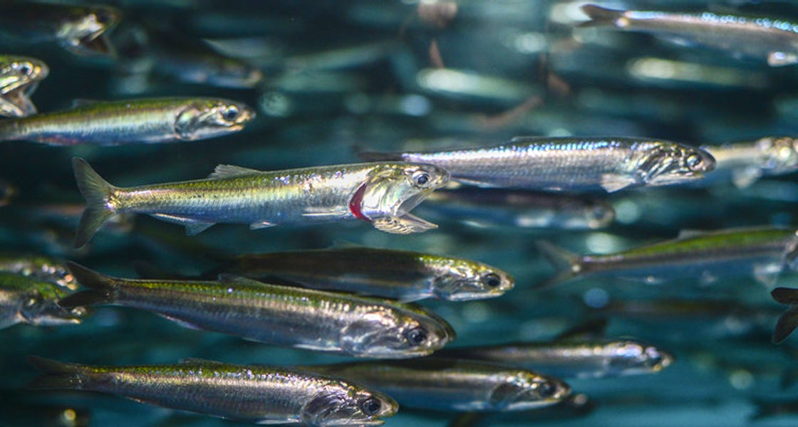
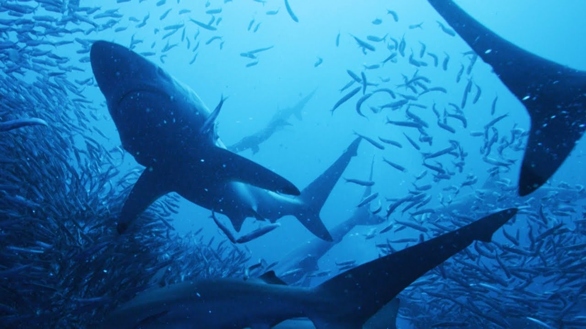

Anchovies
Little fish, big personality
About the Anchovy
Anchovy are just one of the food sources for Blacktip Reef Sharks.
This small fish has more than 140 different species found in the Atlantic, Indian, and
Pacific Oceans. They are also found in the Black and Mediterranean Sea. Anchovy are relatively
small, ranging from around 3/4 of an inch all the way up to around 16 inches. Anchovy are mostly
found in temperate waters. This fish serves as a significant food source for most predatory fish
that share its environment.
As humans, we fish and use anchovies for various foods including
Caesar salad dressing and worchestershire sauce, however, they are also used as bait by fisherman. We
commercially fish for anchovy, and though they are gernerally abundant, they are still subject to
overfishing. Anchovies are filter-feeders. This means they leave their mouth
open as they swim so they can collect food particles that can be found floating in the water
around them. Their primary food source is plankton and also recently hatched fish. Now that we
know more about this little fish, let's learn about one of their favorite foods: plankton.


Learn more about anchovies at these sites:
Britannica - Anchovy
NOAA Fisheries - Northern Anchovy
Animals Network - Anchovy